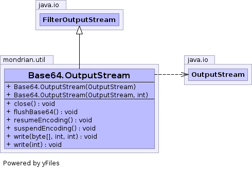

public static class Base64.OutputStream extends FilterOutputStream
Base64.OutputStream will write data to another
java.io.OutputStream, given in the constructor,
and encode/decode to/from Base64 notation on the fly.Base64
out| Constructor and Description |
|---|
Base64.OutputStream(OutputStream out)
Constructs a
Base64.OutputStream in ENCODE mode. |
Base64.OutputStream(OutputStream out,
int options)
Constructs a
Base64.OutputStream in
either ENCODE or DECODE mode. |
| Modifier and Type | Method and Description |
|---|---|
void |
close()
Flushes and closes (I think, in the superclass) the stream.
|
void |
flushBase64()
Method added by PHIL.
|
void |
resumeEncoding()
Resumes encoding of the stream.
|
void |
suspendEncoding()
Suspends encoding of the stream.
|
void |
write(byte[] theBytes,
int off,
int len)
Calls
write(int) repeatedly until len
bytes are written. |
void |
write(int theByte)
Writes the byte to the output stream after
converting to/from Base64 notation.
|
flush, writepublic Base64.OutputStream(OutputStream out)
Base64.OutputStream in ENCODE mode.out - the java.io.OutputStream to which data will be written.public Base64.OutputStream(OutputStream out, int options)
Base64.OutputStream in
either ENCODE or DECODE mode.
Valid options:
ENCODE or DECODE: Encode or Decode as data is read.
DONT_BREAK_LINES: don't break lines at 76 characters
(only meaningful when encoding)
Note: Technically, this makes your encoding non-compliant.
Example: new Base64.OutputStream( out, Base64.ENCODE )
out - the java.io.OutputStream to which data will be written.options - Specified options.Base64.ENCODE,
Base64.DECODE,
Base64.DONT_BREAK_LINESpublic void write(int theByte) throws IOException
write in class FilterOutputStreamIOExceptiontheByte - the byte to writepublic void write(byte[] theBytes, int off, int len) throws IOException
write(int) repeatedly until len
bytes are written.write in class FilterOutputStreamIOExceptiontheBytes - array from which to read bytesoff - offset for arraylen - max number of bytes to read into arraypublic void flushBase64() throws IOException
IOExceptionpublic void close() throws IOException
close in interface Closeableclose in interface AutoCloseableclose in class FilterOutputStreamIOExceptionpublic void suspendEncoding() throws IOException
IOExceptionpublic void resumeEncoding()